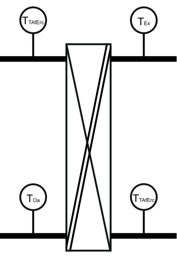
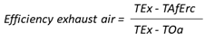
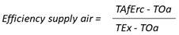

[MON_ERC] 能量回收监控
功能块 MON_ERC 计算并监控能量回收效率。
MON_ERC 根据能量回收单元上的温度值计算能量回收效率。可以监控以下能量回收装置：
- Plate heat exchanger.
- Close-circuit heat exchanger
- Rotation heat exchanger with and without humidity transfer
MON_ERC 可用于监控，但不能自动停止工厂或部分工厂。
Thermal stable operation
如果能量回收装置处于热稳定运行状态 [StblOp]，则会监测效率。热稳定运行是根据温度测量值的静态评估来确定的。
必须满足以下条件：
- A temperature difference greater than 5.0 [K] (9 [°F]) between the extract air temperature [TEx] and the outside temperature [TOa].
- Nearly constant air temperature values for [TOa], [TEx], and [TAfErc].
只要实现热稳定运行，输出 [StblOp] 就设置为 1。
Sensor placement
计算能源效率需要三个测量值：[TEx]、[TOa] 和 [TAfErc]。 [TAfErc] 可以放置在送风管道或排风管道中。

如果 [TAfErc] 位于排风管道中，请将 [SnlcTErc] 的值设置为 2（排风）。以下公式计算效率：

如果 [TAfErc] 位于送风管道中，请将 [SnlcTErc] 设置为值 1（送风）。以下公式计算效率：

如果 [TAfErc] 位于送风管道上，请考虑与加热线圈的距离。将传感器放置在距加热线圈至少 150 mm 的位置，以避免热辐射的影响。
[TlcrFan] 可配置为考虑排风风扇对测量排风温度 [TEx] 的影响。 [TlcrFan] 处的值在内部添加到 [TEx] 中的值。
温度传感器的测量值每60秒获取一次，然后进行过滤，以防止对温度的短期干扰。
再热值与制造商指示的效率不匹配，因为它（效率）是根据温度测量和传感器位置计算的。无法对能量回收的绝对质量做出明确的说法。
计算出的再热值受排风与室外空气流量比的影响。如果抽取空气和外部空气的份额不相等，则计算再加热可以指示更高或更低的值。
Causes for a poor efficiency
能量回收的运行效率较低。这可能意味着：
- The energy recovery unit is iced, defective, dirty, or incorrectly connected.
- Poor air volume through the energy recovery unit.
- Imprecisely measured temperature downstream of the energy recovery unit.
- Bypass dampers reduce volume flow through the energy recovery unit. The MON_ERC function must be switched off with [EnFnct] = 0 when using bypass dampers.
The limit to efficient operation
如果在时间 [DlyLmVio] 内满足所有条件，则允许的效率极限值 [LmRd] 设置为值 1：
- Efficiency [Efcy] is less than or equal to the preset efficiency limit value [EfcyLm].
- Thermal stable operation is achieved ([StblOp] = 1).
- The energy recovery unit is operating at full capacity ([CtlVal] = 100 %).
Enable and reset the energy recovery unit
如果输入使能功能[EnFnct]设置为0：
- The output efficiency [Efcy] = 0.0
- The output stable operation [StblOp] = 0.0
- The timer for signal delay after a limit value violation [DlyLmVio] is reset
- The output efficiency limit value [LmRd] is not set to 0
如果输入 [Reset] 设置为 1，MON_ERC 将执行与启用功能 [EnFnct] 设置为 0 相同的步骤，但有以下区别：
- The output limit reached [LmRd] is set to 0.
- The input [Reset] is automatically set to 0.
- Only the positive edge on the input [Reset] always sets back the output limit reached [LmRd] to 0.
输入 | 描述 | 数据类型 | 默认值 |
|---|---|---|---|
EnFnct | Enable function 启用该功能。 | 布尔值 | 1 |
0 - 该功能被禁用。 | |||
Reset | Reset 重置内部过滤器和达到限制指示器。 | 布尔值 | 0 |
0 - 不重置 | |||
CtlVal | Control value 控制器要求的能量回收单元的当前运行能力。 | 真实的 | 0.0 [%] 0.0…100.0 [%] |
TOa | Outside temperature | 真实的 | 0.0 [°C] -100.0…50.0 [°C] |
TEx | Extract air temperature | 真实的 | 0.0 [°C] -100.0…100.0 [°C] |
TAfErc | Air temperature after energy recovery unit | 真实的 | 0.0 [°C] -100.0…100.0 [°C] |
SnlcTErc | Location to measure air temperature after energy recovery unit | 整数 | 1: Supply air |
1: Supply air | |||
TIcrFan | Temperature increase from fan motor | 真实的 | 2.0 [K] |
EfcyLm | Efficiency limit value | 真实的 | 50.0 [%] 0.0…100.0 [%] |
DlyLmVio | Signal delay after limit value violation 达到 [EfcyLm] 后 [LmRd] 的信号延迟。 | 时间 | 1h 0…24d_20h_31m_23s_647ms |
输出 | 描述 | 数据类型 | 默认值 |
|---|---|---|---|
Efcy | Efficiency 该值表示回收单元的计算效率。仅当 [StblOp] = 1 时计算才有效。 | 真实的 | 0.0 [%] 0.0…100.0 [%] |
LmRd | Limit reached 效率 [Efcy] 已达到效率极限 [EfcyLm]。 | 布尔值 | 0 |
0 - 未达到限制。 | |||
StblOp | Stable operation 实现热稳定运行。 | 布尔值 | 0 |
0 - No | |||
|
SysUnits | System of units 表示system of units由块使用。 | 整数 | 1: International system of units (SI) (fallback) 1...5 |
1: International system of units (SI) (fallback) | |||
ErrCode | Error code indication | 整数 | 0: No error |
= 0 - No error | |||